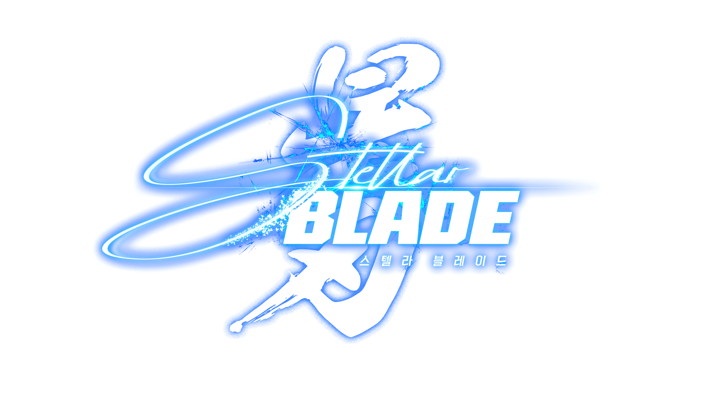
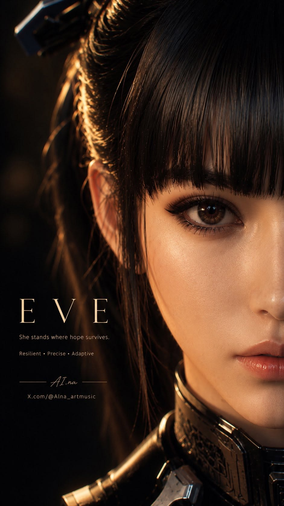

Stellar Blade takes place in a post-apocalyptic world set on Earth. At the start of the 22nd century, the scientist Raphael Marks created Mother Sphere, an artificial intelligence made to advance the human race. Through her efforts, humans are able to undergo rapid biotechnological and nanotechnical evolution. However, the arrival of monstrous creatures called Naytibas threatens humanity, and ultimately humans lost the war against the Naytibas. Forced to abandon Earth, the remaining humans find sanctuary in outer space in a place called the Colony with Mother Sphere as their leader.
However, the farther Eve’s journey goes, the more questions begin to arise.
Stellar Blade bukan sekadar kisah "menyelamatkan dunia". Ini adalah perjalanan penuh misteri, pengkhianatan, pilihan moral, dan rahasia besar yang perlahan terungkap sedikit demi sedikit hingga membuat pemain terus penasaran. Saat kamu merasa sudah memahami apa yang terjadi, game ini kembali memberikan petunjuk baru yang membuatmu mempertanyakan semuanya. Stellar Blade adalah pengalaman bermain yang menantang, emosional, dan penuh teka-teki yang akan membuatmu terus ingin tahu lebih banyak.

EVE and referred to as Angel by the citizens of Xion, is a former member of the 7th Airborne Squad of the EVE Defence Force and the playable protagonist of Stellar Blade.
Originating from the off-world Colony where the human race shelters, EVE's arrival on Earth is a disaster. As the 7th Airborne Squad begins its operation to reclaim the planet from the Naytibas, a ferocious surprise attack leaves her unit decimated. With the odds firmly against her survival, EVE is saved by a scavenger named Adam, who guides her into Xion, the last surviving city on Earth. Aided by Adam and later an engineer named Lily EVE vows to continue her mission: the complete elimination of the Naytibas.
Referred to as "Angel" by Xion's surviving residents, EVE explores the treacherous territory, uncovering more of its surprises with almost every step.